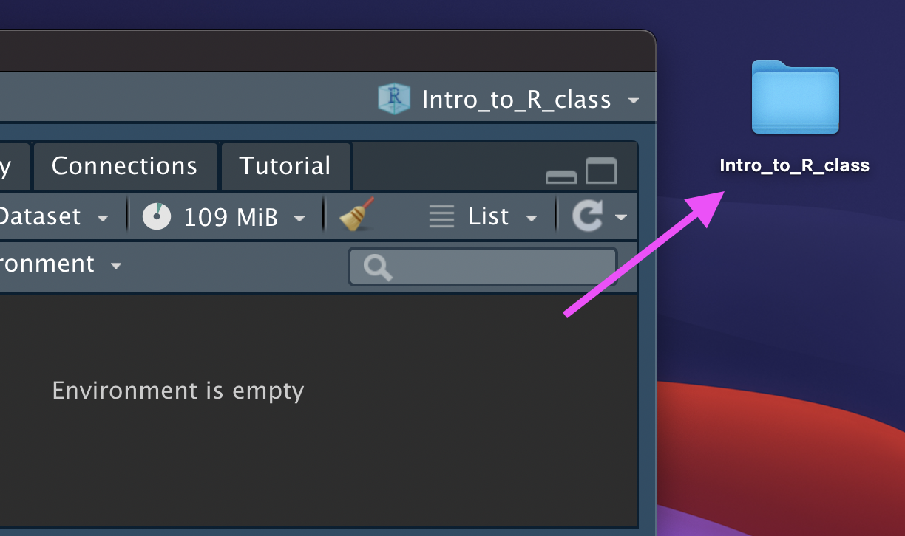

Data Input/Output
Outline
- Part 0: A little bit of set up!
- Part 1: reading CSV file, common new user mistakes in data reading, checking for problems in the read data
- Part 2: data input overview, working directories, relative vs. absolute paths, reading XLSX file (Excel file), other data inputs
- Part 3: writing CSV file
- Part 4: reading and saving R objects
New R Project
Let’s make an R Project so we can stay organized in the next steps.
Click the new R Project button at the top left of RStudio:

New R Project
In the New Project Wizard, click “New Directory”:

New R Project
Click “New Project”:

New R Project
Type in a name for your new folder.
Store it somewhere easy to find, such as your Desktop:

New R Project
You now have a new R Project folder on your Desktop!
Make sure you add any scripts or data files to this folder as we go through today’s lesson. This will make sure R is able to “find” your files.

Data We Use
- Everything we do in class will be using real publicly available data
- Open Data and Data.gov will be sources for the first few days
Data Input
- ‘Reading in’ data is the first step of any real project/analysis
- R can read almost any file format, especially via add-on packages
- We are going to focus on simple delimited files first
- comma separated (e.g. ‘.csv’)
- tab delimited (e.g. ‘.txt’)
- Microsoft Excel (e.g. ‘.xlsx’)
Data Input
Youth Tobacco Survey (YTS) dataset:
“The YTS was developed to provide states with comprehensive data on both middle school and high school students regarding tobacco use, exposure to environmental tobacco smoke, smoking cessation, school curriculum, minors’ ability to purchase or otherwise obtain tobacco products, knowledge and attitudes about tobacco, and familiarity with pro-tobacco and anti-tobacco media messages.”
- Check out the data at: https://catalog.data.gov/dataset/youth-tobacco-survey-yts-data
Data Input: Dataset Location
Dataset is located at https://github.com/chiraltraining/WW01_DataAnalysiswithR/blob/main/modules/07_Data_IO/YouthTobacco_newNames.csv
Download data by clicking the above link
- Google Chrome - if a file loads in your browser, choose File –> Save As, select, Format “Page Source” and save
Data Input: Read in Directly
# load library `readr` that contains function `read_csv`
library(readr)
dat <- read_csv("data/Youth_Tobacco_Survey_YTS_Data.csv")
# `head` displays first few rows of a data frame
head(dat, n = 5)# A tibble: 5 × 31
YEAR Locati…¹ Locat…² Topic…³ Topic…⁴ Measu…⁵ DataS…⁶ Respo…⁷ Data_…⁸ Data_…⁹
<dbl> <chr> <chr> <chr> <chr> <chr> <chr> <chr> <chr> <chr>
1 2015 AZ Arizona Tobacc… Cessat… Percen… YTS <NA> % Percen…
2 2015 AZ Arizona Tobacc… Cessat… Percen… YTS <NA> % Percen…
3 2015 AZ Arizona Tobacc… Cessat… Percen… YTS <NA> % Percen…
4 2015 AZ Arizona Tobacc… Cessat… Quit A… YTS <NA> % Percen…
5 2015 AZ Arizona Tobacc… Cessat… Quit A… YTS <NA> % Percen…
# … with 21 more variables: Data_Value <dbl>, Data_Value_Footnote_Symbol <chr>,
# Data_Value_Footnote <chr>, Data_Value_Std_Err <dbl>,
# Low_Confidence_Limit <dbl>, High_Confidence_Limit <dbl>, Sample_Size <dbl>,
# Gender <chr>, Race <chr>, Age <chr>, Education <chr>, GeoLocation <chr>,
# TopicTypeId <chr>, TopicId <chr>, MeasureId <chr>, StratificationID1 <chr>,
# StratificationID2 <chr>, StratificationID3 <chr>, StratificationID4 <chr>,
# SubMeasureID <chr>, DisplayOrder <dbl>, and abbreviated variable names …Data Input: Read in Directly
So what is going on “behind the scenes”?
read_csv() parses a “flat” text file (.csv) and turns it into a tibble – a rectangular data frame, where data are split into rows and columns
First, a flat file is parsed into a rectangular matrix of strings
Second, the type of each column is determined (heuristic-based guess)
Data Input: Read in Directly
read_csv() needs the path to your file. It will return a tibble
read_csv(file, col_names = TRUE, col_types = NULL,
locale = default_locale(), na = c("", "NA"),
quoted_na = TRUE, quote = "\"", comment = "", trim_ws = TRUE,
skip = 0, n_max = Inf, guess_max = min(1000, n_max),
progress = show_progress(), skip_empty_rows = TRUE
)fileis the path to your file, in quotes- can be path in your local computer – absolute file path or relative file path
- can be path to a file on a website
## Examples
dat <- read_csv(file = "F:/VirtualWeekendWorkshops/VWW01_DataAnalysiswithR/modules/07_Data_IO/data")
dat <- read_csv(file = "Youth_Tobacco_Survey_YTS_Data.csv")
dat <- read_csv(file = "www.someurl.com/table1.csv")Data Input: Read in Directly
Great, but what is my “path”?
Data Input: Read in Directly
Luckily, we already set up an R Project!
If we add the Youth_Tobacco_Survey_YTS_Data.csv file to the intro_to_r folder, we can use the relative path:
dat <- read_csv(file = "Youth_Tobacco_Survey_YTS_Data.csv")Data Input: Read in Directly
read_csv() is a special case of read_delim() – a general function to read a delimited file into a data frame
read_delim() needs path to your file and file’s delimiter, will return a tibble
read_delim(file, delim, quote = "\"", escape_backslash = FALSE,
escape_double = TRUE, col_names = TRUE, col_types = NULL,
locale = default_locale(),na = c("", "NA"), quoted_na = TRUE,
comment = "", trim_ws = FALSE, skip = 0,
n_max = Inf, guess_max = min(1000, n_max),
progress = show_progress(), skip_empty_rows = TRUE
)fileis the path to your file, in quotesdelimis what separates the fields within a record
## Examples
dat <- read_delim(file = "Youth_Tobacco_Survey_YTS_Data.csv", delim = ",")
dat <- read_delim(file = "www.someurl.com/table1.txt", delim = "\t")Data Input: Read in Directly From File Path
dat <- read_csv(file = "data/Youth_Tobacco_Survey_YTS_Data.csv")Rows: 9794 Columns: 31
── Column specification ────────────────────────────────────────────────────────
Delimiter: ","
chr (24): LocationAbbr, LocationDesc, TopicType, TopicDesc, MeasureDesc, Dat...
dbl (7): YEAR, Data_Value, Data_Value_Std_Err, Low_Confidence_Limit, High_C...
ℹ Use `spec()` to retrieve the full column specification for this data.
ℹ Specify the column types or set `show_col_types = FALSE` to quiet this message.The data is now successfully read into your R workspace. Column specification of first few columns is printed to the console.
Common new user mistakes we have seen
- Working directory problems: trying to read files that R “can’t find”
- Path misspecification
- more on this shortly!
- Typos (R is case sensitive,
xandXare different)- RStudio helps with “tab completion”
- Data type problems (is that a string or a number?)
- Open ended quotes, parentheses, and brackets
- Different versions of software
Data Input: Checking the data
- the
View()function shows your data in a new tab, in spreadsheet format - be careful if your data is big!
View(dat)
Data Input: Checking for problems
The spec() function shows you the specification of how the data was read in.
# dat <- read_csv("data/Youth_Tobacco_Survey_YTS_Data.csv")
spec(dat)cols(
YEAR = col_double(),
LocationAbbr = col_character(),
LocationDesc = col_character(),
TopicType = col_character(),
TopicDesc = col_character(),
MeasureDesc = col_character(),
DataSource = col_character(),
Response = col_character(),
Data_Value_Unit = col_character(),
Data_Value_Type = col_character(),
Data_Value = col_double(),
Data_Value_Footnote_Symbol = col_character(),
Data_Value_Footnote = col_character(),
Data_Value_Std_Err = col_double(),
Low_Confidence_Limit = col_double(),
High_Confidence_Limit = col_double(),
Sample_Size = col_double(),
Gender = col_character(),
Race = col_character(),
Age = col_character(),
Education = col_character(),
GeoLocation = col_character(),
TopicTypeId = col_character(),
TopicId = col_character(),
MeasureId = col_character(),
StratificationID1 = col_character(),
StratificationID2 = col_character(),
StratificationID3 = col_character(),
StratificationID4 = col_character(),
SubMeasureID = col_character(),
DisplayOrder = col_double()
)Data Input: Checking for problems
The problems() function shows you if there were any obvious issues when the data was read in.
The output of problems() is a tibble showing each line with a concern.
problems(dat)# A tibble: 0 × 5
# … with 5 variables: row <int>, col <int>, expected <chr>, actual <chr>,
# file <chr>Data Input: Checking for problems
dat looks good so far. What do you see on a messy dataset?
ufo_data <- read_csv(file = "https://github.com/SISBID/Data-Wrangling/blob/gh-pages/data/ufo/ufo_data_complete.csv")problems(ufo_data)# A tibble: 67 × 5
row col expected actual file
<int> <int> <chr> <chr> <chr>
1 16 367 1 columns 367 columns ""
2 58 3 1 columns 3 columns ""
3 79 3 1 columns 3 columns ""
4 115 3 1 columns 3 columns ""
5 123 6 1 columns 6 columns ""
6 151 4 1 columns 4 columns ""
7 161 4 1 columns 4 columns ""
8 171 4 1 columns 4 columns ""
9 181 4 1 columns 4 columns ""
10 191 4 1 columns 4 columns ""
# … with 57 more rowsHelp
For any function, you can write ?FUNCTION_NAME, or help("FUNCTION_NAME") to look at the help file:
?read_delim
help("read_delim")Data Input: Read in From RStudio Toolbar
R Studio features some nice “drop-down” support, where you can run some tasks by selecting them from the toolbar.
For example, you can easily import text datasets using the File --> Import Dataset --> From Text (readr) command. Selecting this will bring up a new screen that lets you specify the formatting of your text file.
After importing a dataset, the corresponding R command appears in the console.
Data Input: Read in From RStudio Toolbar

Data Input: base R
There are also data importing functions provided in base R (rather than the readr package), like read.delim() and read.csv().
These functions have slightly different syntax for reading in data (e.g. header argument).
However, while many online resources use the base R tools, the latest version of RStudio switched to use these new readr data import tools, so we will use them in the class for slides. They are also up to two times faster for reading in large datasets, and have a progress bar which is nice.
Data input: readr highlights
- Modern, improved tools from
readrR package:read_delim(),read_csv()- needs a file path to be provided
- parses the file into rows/columns, determines column type
- returns a data frame
- Some functions to look at a data frame:
head()shows first few rowstail()shows the last few rowsView()shows the data as a spreadsheetspec()gives specification of column types
Data input: other file types
- From
readrpackage:read_delim(): general delimited filesread_csv(): comma separated (CSV) filesread_tsv(): tab separated files- others
- For reading Excel files, you can do one of:
- use
read_excel()function fromreadxlpackage - use other packages:
xlsx,openxlsx
- use
Data input: other file types
havenpackage has functions to read SAS, SPSS, Stata formats
library(haven)
# SAS
read_sas(file = "mtcars.sas7bdat")
# SPSS
read_sav(file = "mtcars.sav")
# Stata
read_dta(file = "mtcars.dta")Lab Part 1
üíª Data I/O Lab
Working Directories
Working directory is a directory that R assumes “you are working in”. It’s where R looks for files.
“Setting working directory” means specifying the path to the directory.
# get the working directory
getwd()
# set the working directory
setwd("/Users/avahoffman/Desktop")R uses working directory as a starting place when searching for files.
Working Directories
R uses working directory as a starting place when searching for files:
if you use
read_csv("Bike_Lanes_Long.csv"), R assumes that the file is in the working directoryif you use
read_csv("data/Bike_Lanes_Long.csv"), R assumes thatdatadirectory is in the working directoryif you use an absolute path, e.g.
read_csv("/Users/avahoffman/data/Bike_Lanes_Long.csv"), the working directory information is not used
Working Directories
Setting up an R Project can avoid headaches by telling R that the working directory is wherever the .Rproj file is.
Data Output
While its nice to be able to read in a variety of data formats, it’s equally important to be able to output data somewhere.
The readr package provides data exporting functions which have the pattern write_*:
write_csv(),write_delim(), others.
From write_csv() documentation:
write_csv(x, file,
na = "NA", append = FALSE,
col_names = !append, quote_escape = "double",
eol = "\n", path = deprecated()
)Data Output
x: data frame you want to write
file: file path where you want to R object written; it can be:
- an absolute path,
- a relative path (relative to your working directory),
- a file name only (which writes the file to your working directory)
# Examples
write_csv(dat, file = "YouthTobacco_newNames.csv")
write_delim(dat, file = "YouthTobacco_newNames.csv", delim = ",")R binary file
.rds is an extension for R native file format.
write_rds() and read_rds() from readr package can be used to write/read a single R object to/from file.
Saving datasets in .rds format can save time if you have to read it back in later.
# write an object: a data frame "dat"
write_rds(dat, file = "yts_dataset.rds")
# write an object: vector "x"
x <- c(1, 3, 3)
write_rds(x, file = "my_vector.rds")
# read an object from file and assign to a new object named "y"
x2 <- read_rds(file = "my_vector.rds")
x2[1] 1 3 3Summary
- R Projects are a good way to keep your files organized and reduce headaches
- Use
read_csv()andread_delim()from thereadrpackage to read in your data - Don’t forget to use
<-to assign your data to an object! - Use
spec()to understand objects - Use
head()andtail()to preview the first and last lines of the data - Use
write_csv()andwrite_delim()from thereadrpackage to write your (modified) data
üè† Class Website
üíª Data I/O Lab